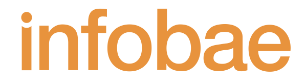

Martín Tetaz presentó BAmos!, un laboratorio de ideas para transformar la Ciudad de Buenos Aires
20 de febrero de 2025
El diputado radical expuso en una jornada, donde participaron diferentes dirigentes políticos, académicos y parlamentarios, entre otros. En un evento que reunió a especialistas, dirigentes políticos, académicos y representantes de la sociedad civil.
Leer nota completa